Familiarisez-vous avec Notre Application
Vous rencontrez des difficultés dans votre premiére utilisation du produit? vous ne saisissez pas le mode de fonctionment de l'application ? les options vous-semblent t'elles trop complexes pour comprendre a premiére vue ? Pas de Probléme ! Easy Cos a mis a votre disposition un manuel d utilisation explicite et entiérement dédié pour vous aidez a effectué vos premiers pas et facilitez votre tache.

Manipuler vos données mensuelles via des fichiers Excel
en plus des différentes fonctionnalités fournies par l 'application , Easy Cos vous offre la possibilité d exporter vos prêts vers des fichiers Excel pour les traiter de façon indépendante et notament fournir une documentation concréte aux clients souhaitant se renseigner sur l'état d'avancement de leurs paiments respectives .
cette option qui se trouve principalement dans les trois interfaces suivantes : prêts accordés , dons effectués et archives est un peu délicate a manipuler vu qu'elle sollicite une certaine rigueur de la part de l utilisateur lors de la saisie de données
Gestion du compte Cos
Fatigué de devoir a chaque fois calculer le budget du COS ? de vérifier a chaque fois la possibilité d'effectuer un prélévement au compte ? Probléme résolue !
Maintenant , vous devez juste introduire la valeur initiale du compte Cos et l'application s'occupe de reste. En effet , Easy Cos ..
Connexion :
cette section s'intéresse au fonctionnement de la fenétre Connexion avec les divers options qu'elle contient ( présenté ci -dessous ) :
Se connecter :
saisissez votre e-mail ainsi que votre mot de passe , vous pouvez cliquez sur l'icon"oeil" pour visualiser la saisie de votre mot de passe , cliquez ensuite sur "Se connecter" , vous pouvez également fermer l'application en cliquant en haut
Remarque : dans votre premiére utilisation du produit , votre mot de passe est "admin" , de méme pour le Pseudo . Veuillez les modifier aprés pour raison de sécurité
Accueil :
cette section s'intéresse au fonctionnement de la fenétre Accueil avec les divers options qu'elle contient ( présenté ci -dessous ) .
prélévement du mois :
cliquez sur l'icon qui se trouve en haut dans la barre d'outils , elle est encerclé en rouge dans la photo ci-dessous

une fenétre s'affiche avec une table qui contient les prélévement a faire ce mois-ci :
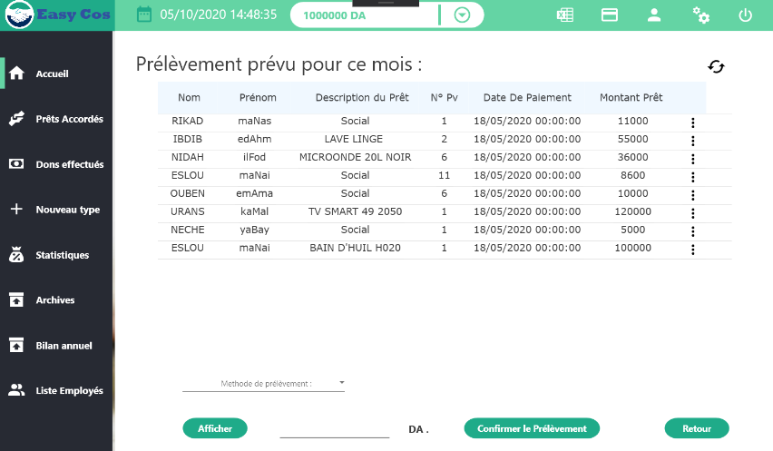en bas , vous avez trois options ,
infos du compte :
en survolant l icon ci-dessous un bloc s'affiche , ce dernier contient vos informations personnelles (mot de passe , nom utilisateur , photo de profil ) :
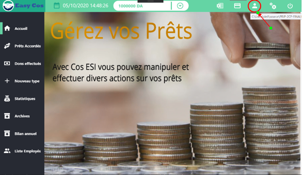
description :
en cliquant sur les trois points ci dessous , une petite liste s'affiche , cliquez sur "Description" pour l'afficher :

pour fermer la description cliquez sur le button ci-dessous :
deconnexion :
en cliquant sur l'icon ci-dessous , vous allez vous déconnectez et revenir a l'interface de connexion
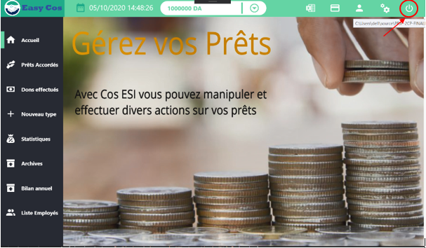
Prêts accordés :
cette section s'intéresse au fonctionnement de la fenétre des prêts accordés avec les divers options qu'elle contient ( présenté ci -dessous ) .
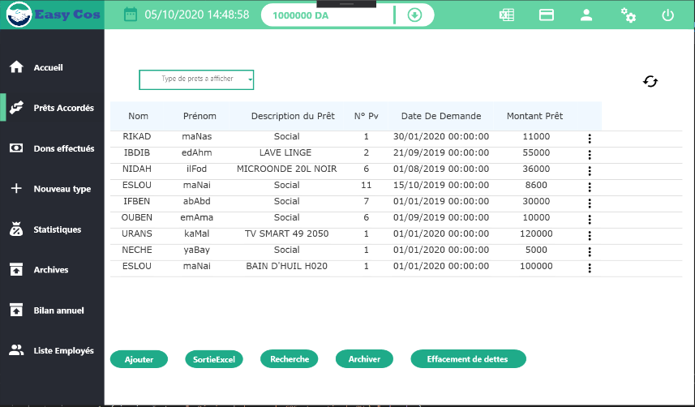filtre des prêts par type :
saisissez le type de prét que vous souhaitez affiché dans la barrre de recherche , la table s'actualisera automatiquement et affichera les résultats du filtre :
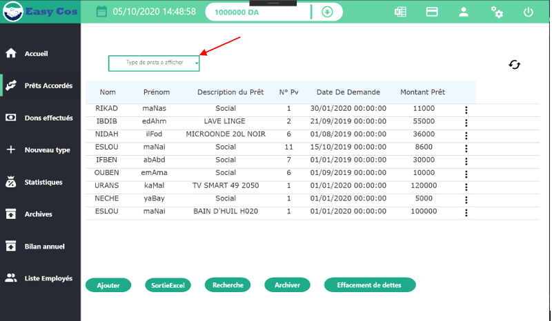
Ajouter un Prêt :
en cliquant sur ajouter , il vous sera demandez de remplir un formulaire , aprés avoir fournie toutes les informations nécessaires veuillez "Confirmer" l'ajout , vous pouvez également annuler l opération en cliquant sur "Annuler"
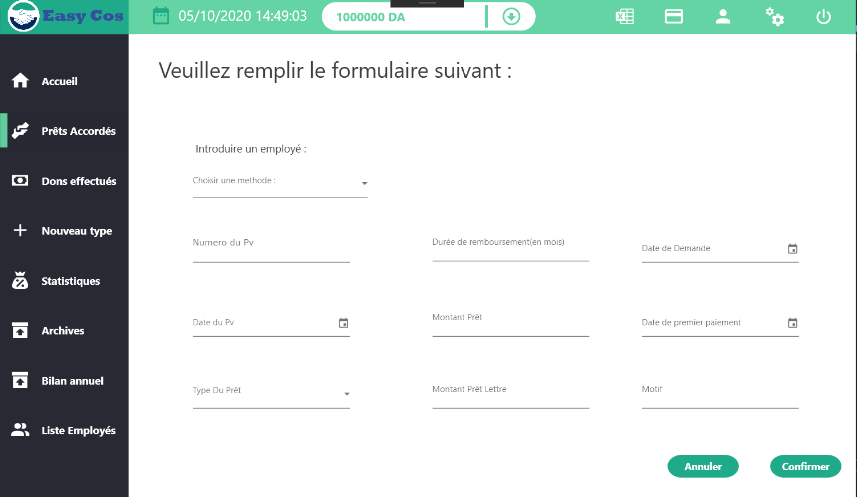Aprés confirmation , votre nouveau prêt s'affichera dans la table de prêts en cours.
Recherche Prêt :
en cliquant sur Recherche , un formualire apparaitra , remplissez les champs qui vous intéressent et cliquez ensuite sur "Confirmer", vous pouvez également annuler l'opération en cliquant sur "Annuler"
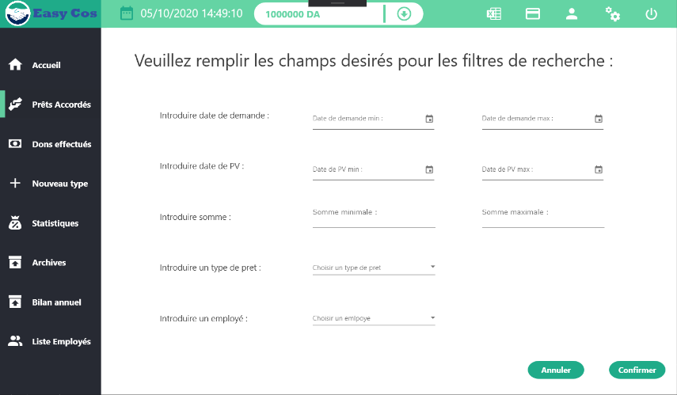
la table des prêts triées s'affichera sur la fenétre aprés confirmation
Archiver un Prêt :
en cliquant sur archiver , une nouvelle colonne apparait dans la table des prêts ,celle-ci vous permettra de selectionner les prêts a archivé manuellement un par un , vous pouvez également selectionner tout les prêts en cliquant sur " selectionner tout " , enfin veuillez "Confirmer" l'archivage ou "Annuler"

Aprés confirmation , votre prêt sera transferé vers la fenétre des archives
Details par prêt :
Vous pouvez accéder au détails d'un certain prét , il vous suffie de cliquer sur la case de la derniére colonne du prét envisagée et séléctionner "Détails" , a partir de la la fenétre ci-dessous s'affichera :

Comme vous le voyez , elle contient les différents informations du prêt choisi ainsi que les données reliées au suivi , vous pouvez notamment choisir type de prélévement a faire et ensuite l'effectuer
Vous pouvez aussi accéder au information de l'employé bénéficient de ce prét en cliquant sur "plus d informations"
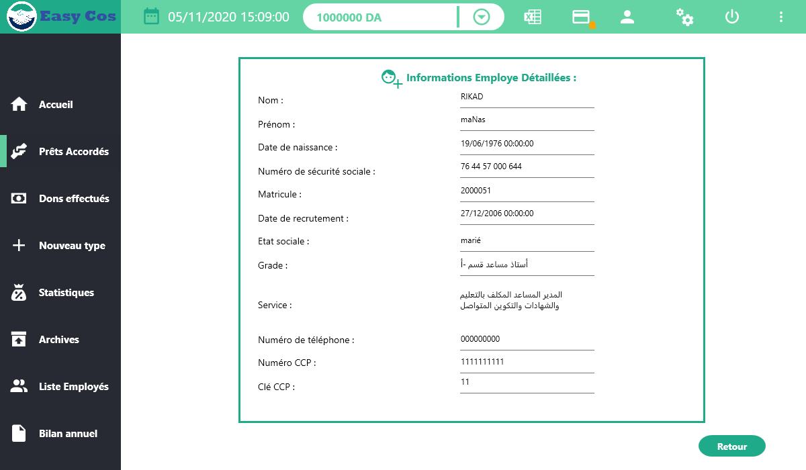
Nouveau Type :
cette section s'intéresse au fonctionnement de la fenétre du Nouveau type avec les divers options qu'elle contient ( présenté ci -dessous ), comme vous le constatez , les types existants s'affichent a gauche de la fenétre : .
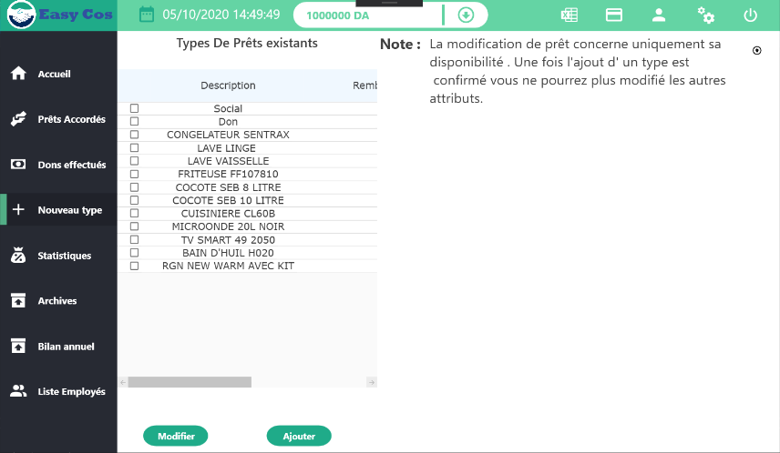Ajouter un type :
en cliquant sur "Ajouter" , un petit forormulaire apparait a droite de la fenétre , il vous suffit de le remplir et de cliquer sur "Confirmer" et votre nouveau type s'affichera dans la table a gauche , vous pouvez également l'annuler en cliquant sur "Annuler" :
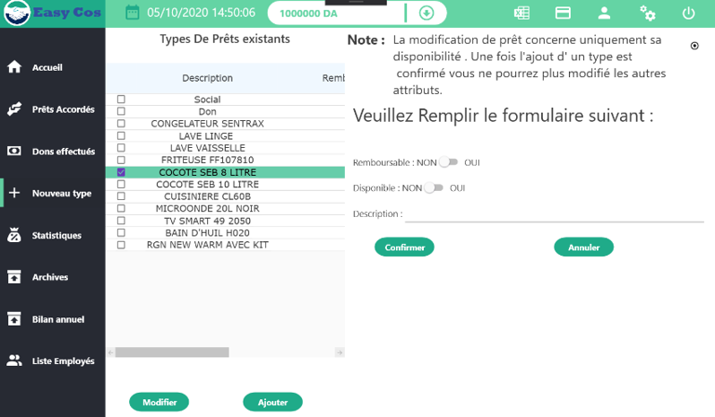
Modifier un type :
Sélectionner un type de la table des types existants puis cliquez sur "Modifier" pour modifier la disponibilité du prêt , cliquez ensuite sur "Confirmer" ou sur "Annuler" pour annuler la modification
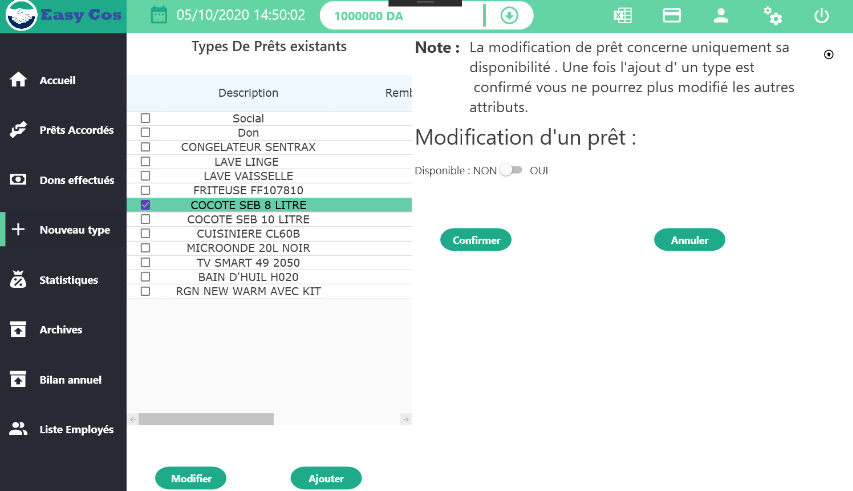Dons effectués :
cette section s'intéresse au fonctionnement de la fenétre des prêts accordés avec les divers options qu'elle contient ( présenté ci -dessous ) .
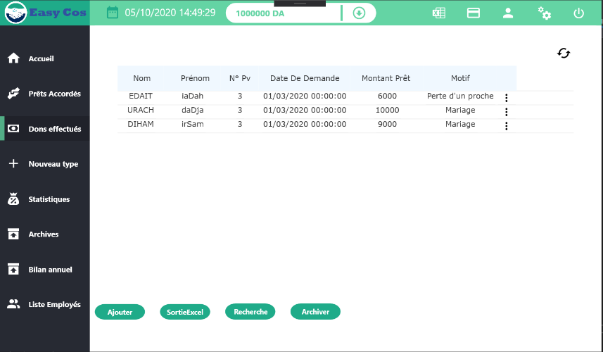Ajouter un don :
en cliquant sur ajouter , il vous sera demandez de remplir un formulaire , aprés avoir fournie toutes les informations nécessaires veuillez "Confirmer" l'ajout , vous pouvez également annuler l opération en cliquant sur "Annuler"
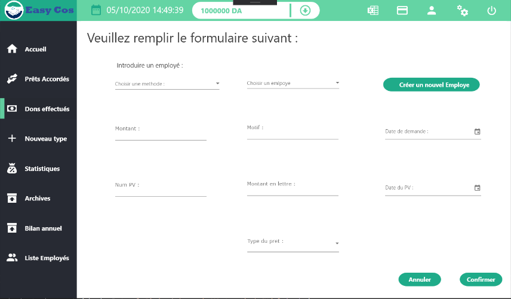Aprés confirmation , votre nouveau don s'affichera dans la table.
Recherche don :
en cliquant sur Recherche , un formualire apparaitra , remplissez les champs qui vous intéressent et cliquez ensuite sur "Confirmer", vous pouvez également annuler l'opérationen cliquant sur "Annuler"
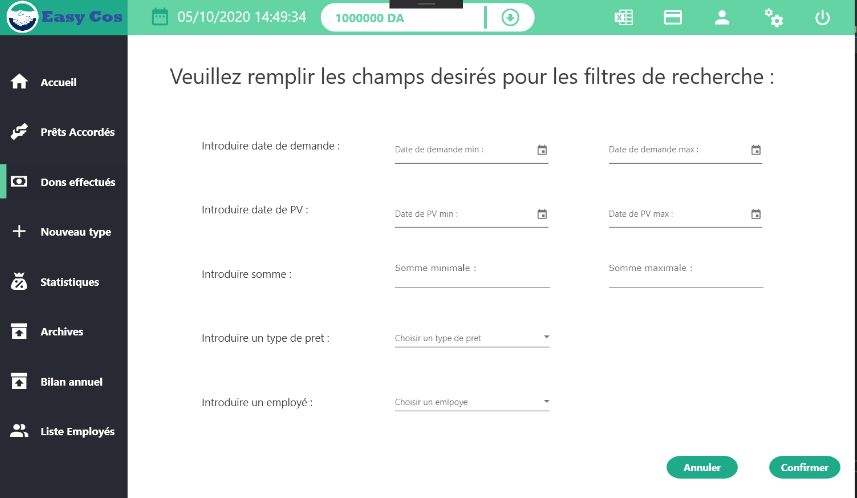
la table des prêts triées s'affichera sur la fenétre aprés confirmation
Archiver un don :
en cliquant sur archiver , une nouvelle colonne apparait dans la table des prêts ,celle-ci vous permettra de selectionner les prêts a archivé manuellement un par un , vous pouvez également selectionner tout les prêts en cliquant sur " selectionner tout " , enfin veuillez "Confirmer" l'archivage ou "Annuler"
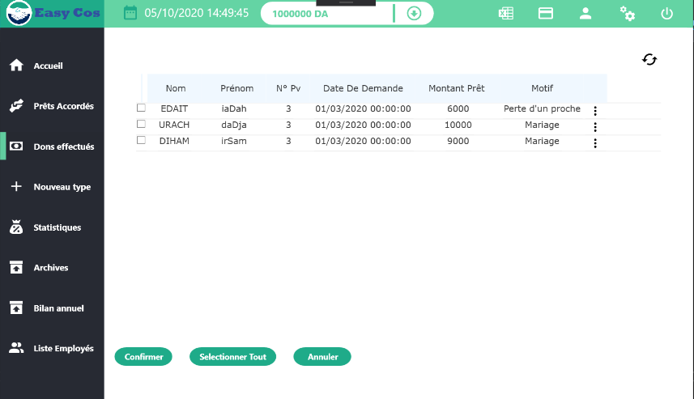
Aprés confirmation , votre don sera transferé dans la fenétre des archives.
Statistiques :
cette section s'intéresse au fonctionnement de la fenétre des Statistiques avec les divers options qu'elle contient ( présenté ci -dessous ) .

les Listes :
en cliquant sur le boutton "Par liste" un formulaire apparaitra, remplissez les critéres qui vous intéressent puis cliquez sur "Recherche"
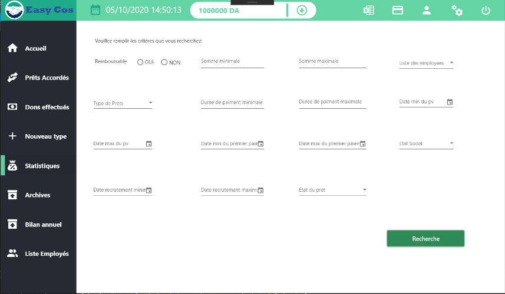
le résultat de la recherche s'affiche sur la table suivante avec le nombre ainsi que la somme de tout les prêts correspendants , vous pouvez également retourner vers l'interface de statistiques en cliquant sur "Retour"

les Graphes :
en cliquant sur le boutton "Par Graphe" , il vous sera demandé d'introduire l'année a consulter , cliquez ensuite sur "Confirmer"
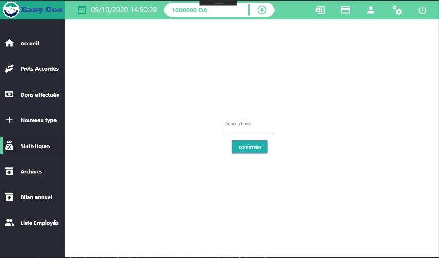
dans la premiére page, vous avez un Pie-graphe qui résume la répartition des prêts par type dans l'année choisie , en bas du graphes vous avez " une légende" qui indique la correspendance de type par couleur , a gauche vous avez les "Paramétres avancés"
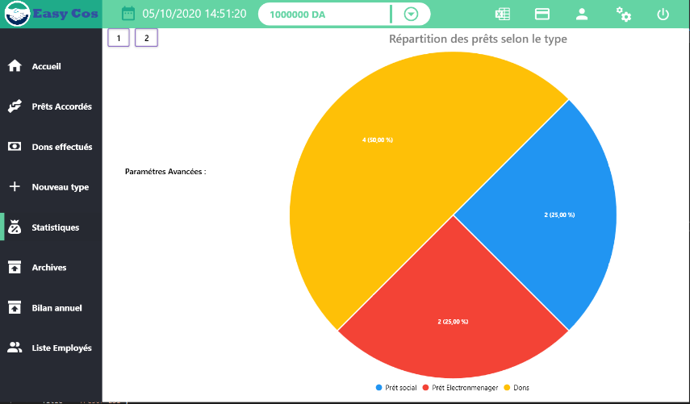
cliquez sur le "boutton 2" en haut pour accéder a la deuxiéme page , arrive-la vous trouvez deux graphes , le premier représente l'evolution du compte Cos selon les mois tandis que le deuxiéme représente le nombre de prêts totals ppar mois

Archivages :
cette section s'intéresse au fonctionnement de la fenétre des Archivages avec les divers options qu'elle contient ( présenté ci -dessous ) .
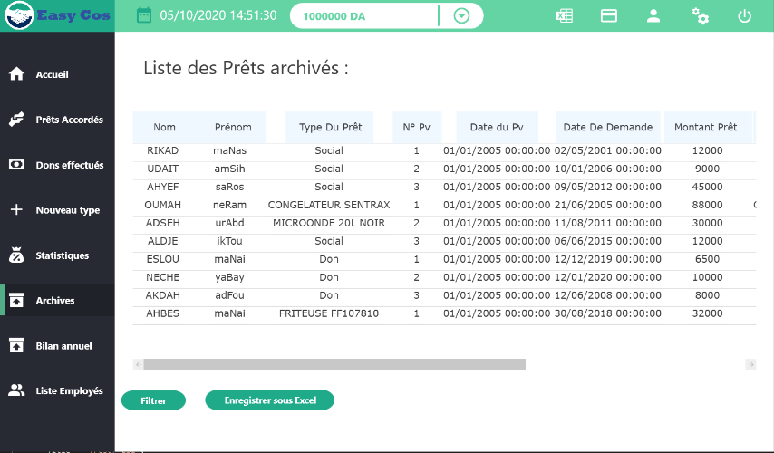filtrer les archives :
en cliquant sur "Filtrer " , un formualire apparaitra , remplissez les champs qui vous intéressent et cliquez ensuite sur "Recherche"
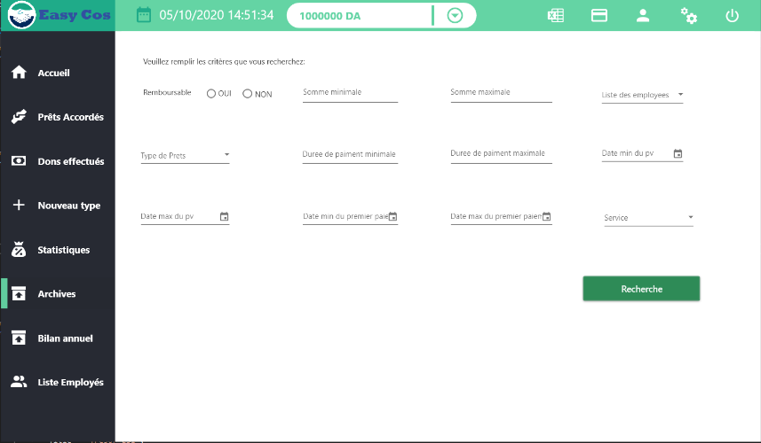
Bilan annuel :
cette section s'intéresse au fonctionnement de la fenétre du Bilan annuel avec les divers options qu'elle contient ( présenté ci -dessous ) .
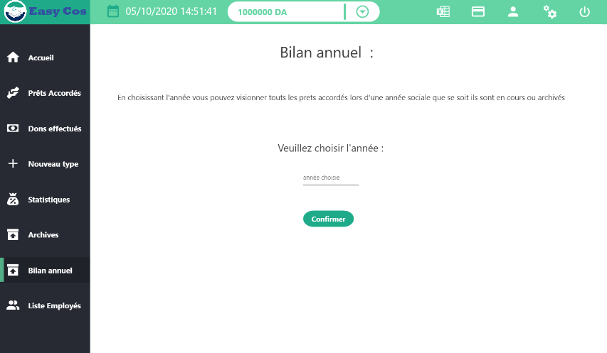introduisez l'année que vous voulez consultez puis cliquez sur "Confirmer" , les résultats s'afficheront dans une table présenté ci-dessous :
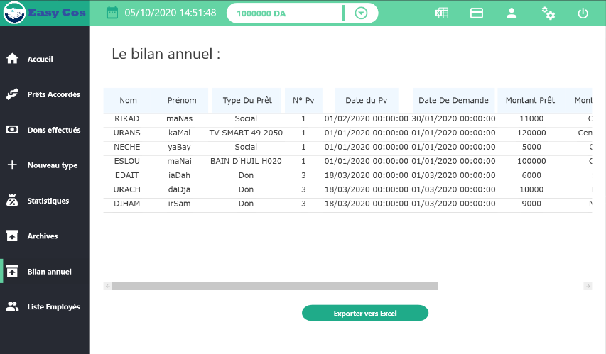Liste employés :
cette section s'intéresse au fonctionnement de la fenétre Liste employés avec les divers options qu'elle contient ( présenté ci -dessous ) .
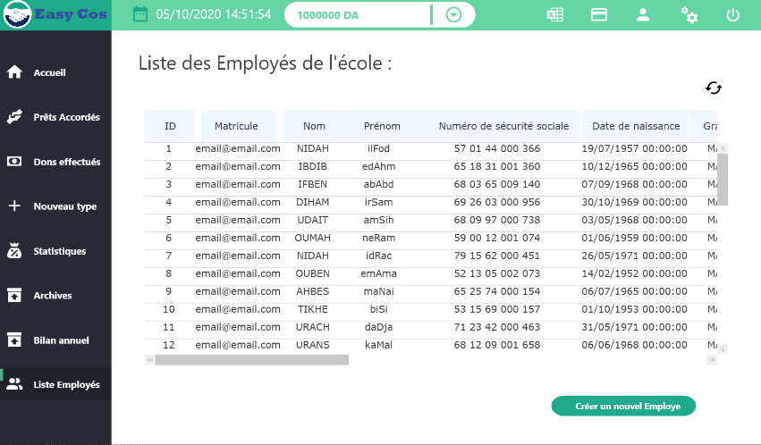Ajouter un employé :
en cliquant sur "Créer un nouvel employé " , un formualire apparaitra , remplissez tout les champs et cliquez ensuite sur "Confirmer" , vous pouvez également annuler l'opération en cliquant sur "Annuler"
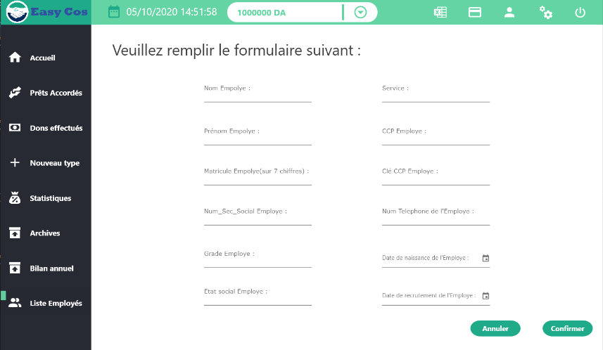
Paramétres :
cette section s'intéresse au fonctionnement de la fenétre des Statistiques avec les divers options qu'elle contient ( présenté ci -dessous ) .
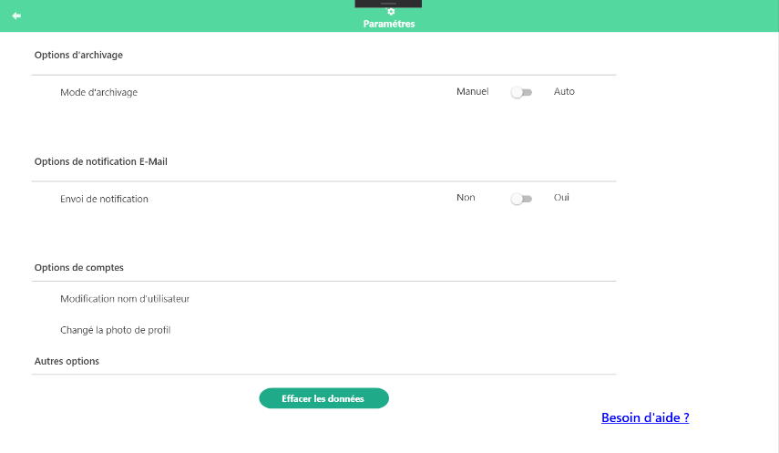changement de mot passe :
saisissez votre mot de passe actuel , introduisez le nouveau mot de passe , resaisissez le nouveau mot de passe, cliquez maintenant sur "Confirmer" pour confirmer la modification , vous pouvez également annuler en cliquant sur "Annuler" :
changement nom d utilisateur :
saisissez votre nouveau nom d utilisateur puis introduisez votre mot de passe , veuillez maintenant "Confirmer" ou "Annuler" la modification:
changement photo de profil :
cliquez sur l icon "plus" pour ajouter une photo via votre ordinateur . aprés avoir choisie votre photo vous pourez la visualiser a gauche , confirmer la modification en cliquant sur l'icon "check" , vous pouvez également "Annuler" :
Notifications :
choisissez si vous voulez activer les notifications ou pas , si "oui" , vous aurez le choix entre "automatique" et "Manuel"
Archivages :
choisissez le mode d'archivages entre "auto" et "Manuel" ,si vous choisissez "auto" il vous sera demandez d'introduire une durée